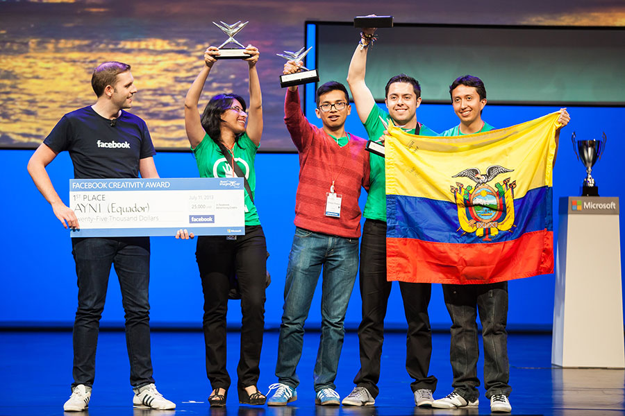

Hi, I'm Patricio Córdova!
Contact Information
|
|
patricio at cs.toronto.edu |
andrescordova at outlook.com |
|
+ 416 618 5534 |
|
| @ |
andrscordova |
Department of Computer Science
|
I'm
-
Master of Science in Applied Computing, University of Toronto (UofT), Toronto - Canada
-
Mitacs-Accelerate Industry Research Grant Holder ($30,000), UofT & Riva Modeling Systems, Canada
-
Teaching Assistant, University of Toronto, Canada
-
Lecturer: Data Structures II, Pontifical Catholic University of Ecuador (PUCE), Quito - Ecuador
-
Award Holder, Facebook Award ($25,000), Microsoft Imagine Cup 2013, St. Petersburg - Russia
-
Bachelor of Software Engineering, Pontifical Catholic University of Ecuador (PUCE), Ecuador
-
Magna Cum Laude, PUCE, Ecuador
-
Academic Excellence Award, 2008 - 2012, PUCE, Ecuador
-
Student Partner, Microsoft, Canada
-
Global Shaper, Toronto Hub, World Economic Forum
Professional Interests and Experience
Current interests:
-
Machine Learning: Application of machine learning algorithms (Neural Networks, SVMs, Gaussian Models, among others) for problems in natural language processing, computer vision, and others.
-
Distributed Computing: Deployment of software on distributed computation frameworks (i.e. Spark, Storm, Hadoop).
Previous experience:
-
Data Visualization: Use of web technologies (D3.js, Crossfilter, Plot.js, etc.) to show distribution, aggregation, filtering, and other insights about big amounts of data.
-
Frontend Web Development: Extensive experience. Comfortable with any web-based technology: from web frameworks like AngularJS to real time applications using WebSockets.
-
Mobile Applications: Academic experience building native mobile applications on Android and hybrid applications on Ionic.
-
Programming Languages:Java, Javascript, Python, C# and Scala.
- Proficient: Java, Javascript, C#.
- Intermediate: Python.
- Beginner: Scala, F#, Erlang.
-
User Experience: Early experience with concepts like Personas, A/B testing, KPIs, Consumer Journey Maps, etc.
Brief Bio (not so brief!)
I’m a Software Engineer of 26 years old. I got my bachelor’s degree at
Pontifical Catholic University of Ecuador (PUCE) in 2012 as Magna Cum Laude. I maintained the academic excellence scholarship during all my studies. I have 5 years of programming experience (freelance + professional work) and I'm a big fan of the following languages: Java, C# and Javascript. Also, I have broader industry experience in areas like relational databases, enterprise systems design, project planning, and web / mobile applications development, mainly web. I consider myself a fast learner so I should say I probably can learn any other language /technology in a relatively short period of time.
I’m part a of the Masters of Science in Applied Computing program at University of Toronto. Here I have had the chance to explore many different areas of Computer Science, i.e.: new generations of databases, human computer interaction, interfaces design and validation, machine and statistical learning, cloud computing and virtualization, computational biology, computer security and cryptography, algorithms refinement, and some other areas. I must say I sat in every class that has caught my attention. I feel that my areas of interest in Computer Science have grown exponentially, and I hope my knowledge too. All this really fulfills me and strives me to find new HARD (very challenging) problems that I can solve with all what I have learnt, and that let me learn more on the road.
Also, during my time as undergraduate student I was the leader of two of the teams that represented my home country (Ecuador) in two international programming/software development contests. The first was ACM ICPC Programming Contest. I traveled to Bogotá in 2009 to compete in the South America - North regional finals.
The second was Microsoft Imagine Cup 2013. Here, my team and I won the opportunity to be the
Ecuadorian delegates in the world finals after winning the local finals among 21 teams from different universities of Ecuador. In the world finals held in St. Petersburg, Russia, we competed against 81 teams of 70 countries. My team, together with the Brazilian team, were the only South American winners. We were awarded with the Facebook Award thanks to our usage of the Facebook Open Graph API to spread awareness about social causes. The Facebook award was considered one of the most important prizes of the contest worth $25,000 in Facebook Advertising Credits.
As other personal interests, I’m an enthusiast, and an advocate of social improvements. In fact, we won the Facebook Award at Microsoft Imagine Cup due to the prototype of a non-profit social network we developed: Ayni (http://www.beayni.com). After this, I had the honor to be chosen to join the
Global Shapers Community. Global Shapers is an international community conformed by a selected group of young people that have proven to excel in the fields they are immersed and that promote social improvements in the world.
Formal Education
Master of Science in Applied Computing (MScAC)
Department of Computer Science, University of Toronto, Toronto – Canada
September 2014 - January 2016
- Core courses: Introduction to Machine Learning (CSC2515), Advanced Database Systems (CSC2508), Advanced Topics in Mobile and Cloud Computing (CSC2231), Advanced Mobile User Interfaces (ECE1780F), Human Computer Interaction (CSC2514), Technical Entrepreneurship (CSC2702), Communication for Computer Scientists (CSC2701).
- Audited courses: Deep Learning for Computer Vision (CSC2523), Natural Language Computing (CSC2511), Computer Security (ECE568), Algorithms in Genome Sequence Analysis (CSC2417).
Bachelor of Software Engineering (B.SE.)
Engineering School, Pontifical Catholic University of Ecuador, Quito – Ecuador
September 2007 – August 2012
- Highlighted courses: Software Engineering I & II, Object Oriented Programming and Events, Data Structures I & II, Programming Languages, Database Systems I & II, Operating Systems I & II, Computer Architecture, Computer Networks, Theory of Computation, Artificial Intelligence I & II, Compilers Design, Web Programming, Digital Electronics and Logic Circuits, Information Systems, Graphics and Animations, Images Processing, Principles of Management, Legal IT, Project Management, Marketing, Finances, Economics, Ethics, others.
Research and Projects
|
|
Introduction to Machine Learning (CSC2515), Final Project: Autonomous Driving: Road-Estimation. |
|
|
Advanced Database Systems (CSC2508), Final Project: Analysis of Real Time Stream Processing Systems Considering Latency. |
|
|
Advanced Mobile User Interfaces (ECE1780), Final Project: Human Whistle Interface. |
Honors and Awards
-
Mitacs-Accelerate Industry Research Grant ($30,000), University of Toronto + Riva Modeling Systems, Toronto - Canada
-
Facebook Award Winner ($25,000), Ayni Team, Microsoft Imagine Cup World Finals 2013, St. Petersburg – Russia, June 2013
-
Ecuador National Winner, Microsoft Imagine Cup 2013 Ecuador Finals, April 2013
-
Magna Cum Laude (45.6/50), B.S. Software Engineering, PUCE, 2012
-
Highest GPA of all students in Engineering Schools (Civil and Software), PUCE, Fall 2009
-
National Delegate for Ecuador, ACM ICPC, Bogotá – Colombia, Fall 2009
-
Academic Excellency Scholarship (top 5% undergraduate students across all schools), PUCE, 2008 - 2010 - 2011 - 2012
Mitacs-Accelerate Industry Research Grant ($30,000), University of Toronto + Riva Modeling Systems, Toronto - Canada
Facebook Award Winner ($25,000), Ayni Team, Microsoft Imagine Cup World Finals 2013, St. Petersburg – Russia, June 2013
Ecuador National Winner, Microsoft Imagine Cup 2013 Ecuador Finals, April 2013
Magna Cum Laude (45.6/50), B.S. Software Engineering, PUCE, 2012
Highest GPA of all students in Engineering Schools (Civil and Software), PUCE, Fall 2009
National Delegate for Ecuador, ACM ICPC, Bogotá – Colombia, Fall 2009
Academic Excellency Scholarship (top 5% undergraduate students across all schools), PUCE, 2008 - 2010 - 2011 - 2012
Work Experience
Research Intern, University of Toronto + Riva Modeling Systems, May – December 2015
- Project: Explore and propose new methods and tools to perform spatial analysis over asset data i.e. public streets and lanes, bridges and viaducts, etc. managed by utilities and public enterprises. Use of web technologies (AngularJS, D3.js, and Crossfilter) to show distribution, aggregation, filtering, and other insights about the data.
- Academic Supervisor: Dr. Ravin Balakrishnan
- Industry Supervisor: M.SC. Kiran Sachdev
- Programming on the Web (CSC309), Winter 2015
- Computational Thinking (CSC104), Fall 2014
Subject: Data Structures II
Co-Founder, Ayni (Non-Profit Organization) – http://www.beayni.com, 2013
Software Engineer - Part Time, Dinama S.A. (Venezuela), Quito – Ecuador, March 2012 – December 2013
Achievements:
- Integrated Dinama’s texting platform with more than 20 systems and databases of public and private local companies, including banks and state enterprises. Received more than 100K transactions a day having less than 2% dropping rate.
Cooperative Research between the School of Biology and the School of Engineering: Development of a platform to open a high volume of research data samples about the Antisana Ecological Reserve (RAE) to the public.
Freelancer, Since 2009
Wide variety of projects: from video streaming systems, to web services connected to IofT devices, to Parrot AR Drones programming.
News Mentions
Microsoft Imagine Cup 2013 World Finals, Facebook Award
(a video with my face in it):
And a nice picture :)

Drone River
A friend of mine, Alberto Camacho, and me competed at Aquahacking a couple of months ago (I hadn't competed in a Hackathon in a while, it was fun to come back). These are some of the highlights:
- Phys.org: How emerging technologies can monitor environment, prevent disasters
- University of Toronto News: This drone just wants to help protect Canada's rivers, lakes
- Fondriest: Drone River Project Uses Artificial Intelligence To Advance Automated Monitoring
And, some tweets:
A drone to help protect the #OttawaRiver? Just one of the amazing #app ideas to come out of #AquaHacking. #CloudIBM pic.twitter.com/BtXqwjVY9v
— IBM Cloud Canada (@IBMCloudCA) June 2, 2015A drone to save the #OttawaRiver? We seriously hope you continue pursuing this idea, @andrscordova! #AquaHacking pic.twitter.com/jG9NzdOYGo
— AquaHacking (@AquaHacking) June 1, 2015The idea of a mesh network using Rasberry PI 2 for autonomous monitoring of the river is pretty impressive #AquaHacking
— James Snider (@Snider_James) May 30, 2015Microsoft Imagine Cup 2013


http://blogs.technet.com/b/microsoftlatam/archive/2013/07/12/ayni-de-ecuador-premio-facebook-a-la-creatividad-imagine-cup-2013.aspx
Vistazo (Spanish), July 2013
http://www.vistazo.com/webpages/tecnologia/?id=25302
Vanguard, July 2013
http://www.vanguardngr.com/2013/07/2013-imagine-cup-microsoft-announces-winners/
Diario Crítico (Spanish), July 2013
http://ecuador.diariocritico.com/noticia/puce-campeon/talento-ecuatoriano/402546
El Mundo Venezuela (Spanish), July 2013
http://www.elmundo.com.ve/noticias/mundo-corporativo/eventos/brasil-y-ecuador-fueron-reconocidos-en-imagine-cup.aspx
Microsoft Blogs (Spanish), June 2013
http://blogs.technet.com/b/microsoftlatam/archive/2013/06/24/ayni-red-que-comunica-a-quienes-necesitan-ayuda-con-quienes-desean-ayudar-imagine-cup-2013.aspx
El Imperdible (Spanish), September 2013
http://elimperdible.ec/web/noticiaspuce/ayudar-ya-no-es-un-impedimento.html
El Comercio (Spanish), April 2013
http://www.elcomercio.com/tendencias/tecnologia/puce-gano-imagine-cup.html
Andes (Spanish), April 2013
http://www.andes.info.ec/es/copa-mundial-software.html
Conferences & Talks
Presenter, Campus Party Opening (Technical Conference), Quito – Ecuador, July 2014
Campus Party is one of the biggest technology events in Ecuador. It hosts technology people and industries from all over the country and provide them lectures about new research, trends, gadgets, etc. I was invited to talk about how youth can have impact in the world and to motivate more young people to join the event. The two people next to me are Telefonica Movistar’s President: José Manuel Casas (2014), and the Mayor of Quito: Mauricio Rodas (2014).

3 Day Startup is an entrepreneurship event that began in Texas, EEUU, and that consists in grouping young entrepreneurs to create startups in 3 days. My role was to guide the entrepreneurs to prototype their apps and define all the aspects related to their business models. The methodology we used was Lean Canvas Modelling.
Special Guest and Speaker, Microsoft Ecuador 20 Years Commemoration Event, Quito – Ecuador, November 2013
Speaker, Microsoft CIO Leadership Forum, Miami – United States, October 2013
Microsoft CIO Leadership Forum is the biggest event that Microsoft organizes for its Latin-American clients. The event hosts the most important 500 CIOs of whole Latin America and Caribe, coming from lead enterprises and organizations of diverse areas like IT, Mining, Oil Exploitation, Government and Education. I was invited with all-expenses paid to talk about social innovation, the social network that I showed at Imagine Cup (Ayni) and the potential of youth to improve the world. My lecture was the second top voted after Jon Landau’s, winner of 2 Oscars for the production of Titanic and Avatar movies, who talked about the Microsoft technologies he used to produce Avatar. The event lasted 3 days and had more than 200 hours of conferences.

Extra Curricular Activities
Also, I’m Global Shaper. In June of 2014 I was accepted to Quito’s Hub and I switched to Toronto’s Hub in October when I moved to Canada. Global Shapers Community (boosted by the World Economic Forum) is a network of Hubs developed and led by young people who are exceptional in their potential, their achievement and their drive to make a contribution to their communities.